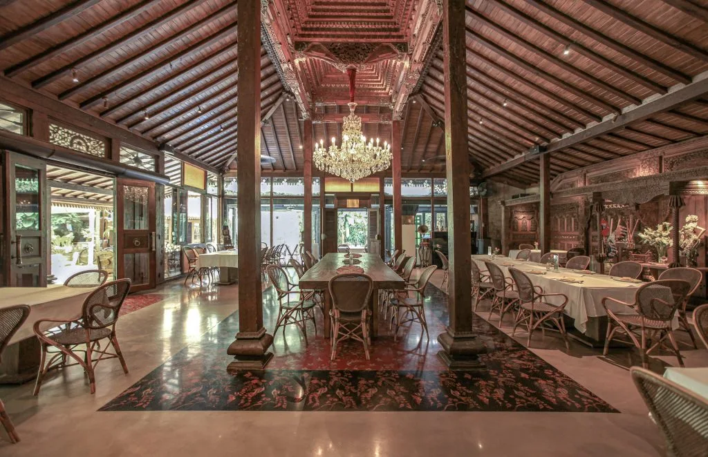

📍 ~1.2 km • Terdekat ⭐ Rekomendasi UtamaRestoran Keluarga • Pelayanan Kuliner Nusantara Premium
Plataran Dharmawangsa
Restoran premium bergaya rumah adat Jawa klasik yang menyajikan hidangan autentik Nusantara di tengah suasana taman yang rindang.
Jl. Dharmawangsa Raya No. 6, RT 4/RW 2, Pulo, Kec. Kebayoran Baru, Kota Jakarta
Selatan
Buka Rute di Google Maps
↗